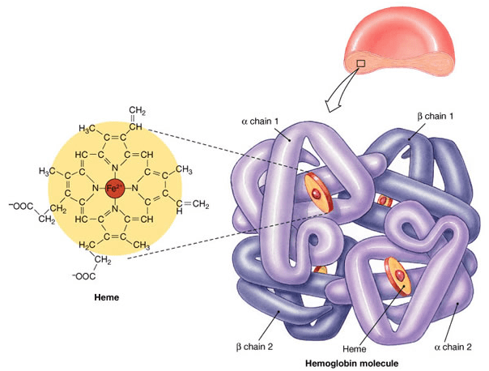

- O2 is transported in blood in:
- 1. Dissolved O2 (< 2%)
- 2. Hb-O2 (> 98%)
- Hemoglobin – 280 million Hb/Red Blood Cell
- Each Hb has 4 polypeptide chains and 4 hemes
- *1 heme binds to 1 O2, thus 1 Hb binds to 4 O2 maximally
- Oxyhemoglobin (Hb-O2) – O2 binds to Fe2+ of heme
- Deoxyhemoglobin – Hb only, no O2, also contain Fe2+ (oxygenation, not oxidation)
